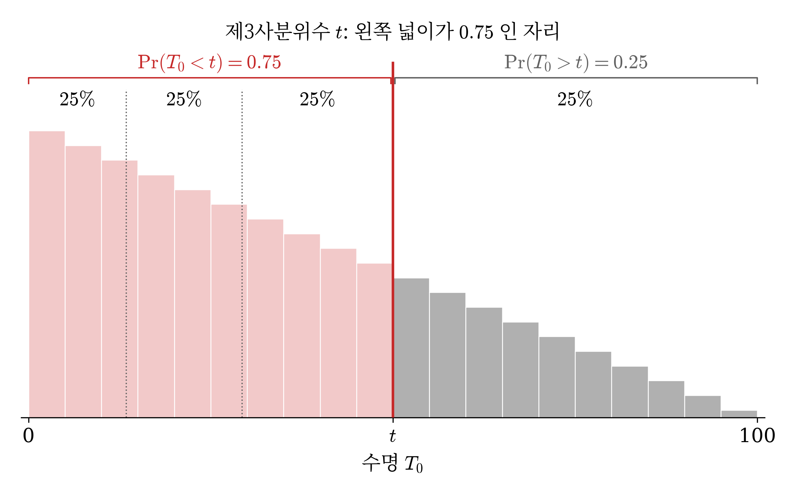
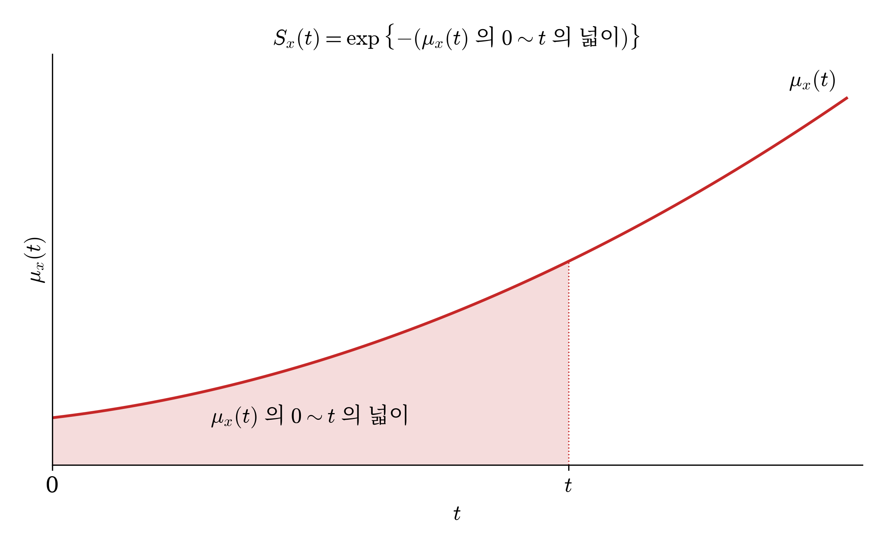
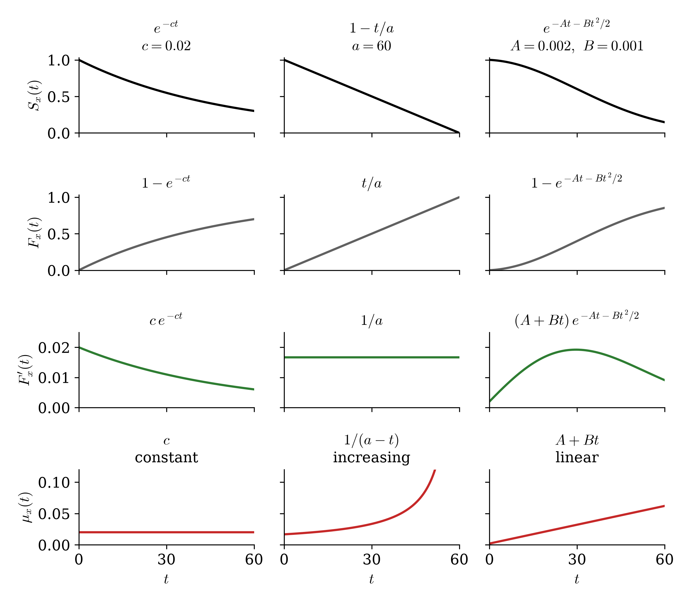
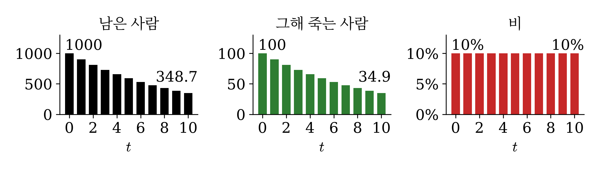
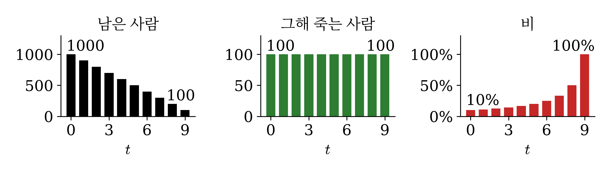
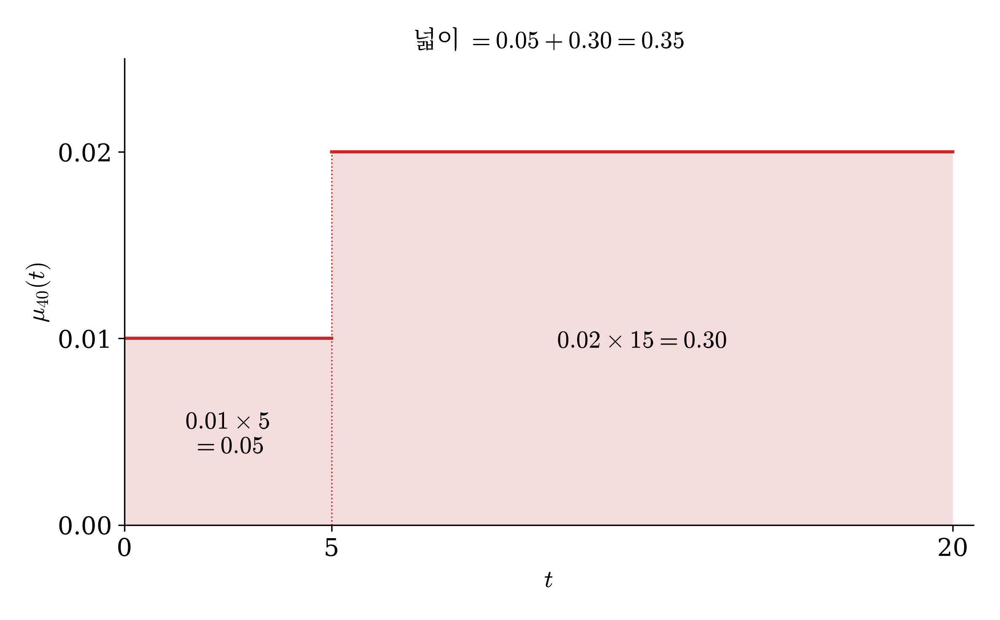
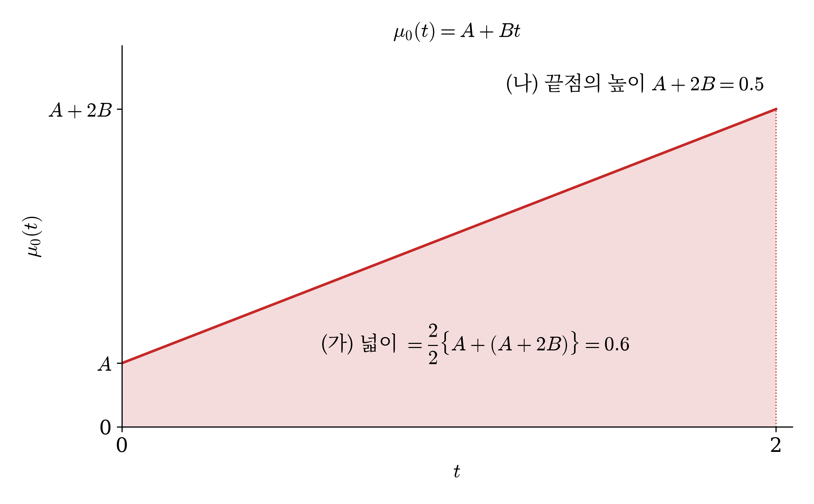

10wk-2: 계리사 기출문제 풀이 (1)
1. 강의영상
2. 보충방식
- 아래 중 하나의 방법으로 하려고 합니다.
- 자유주제 특강
- 진도보강
- 혼합
- 프로젝트를 선택한 사람이 없음.
3. 계리사시험
- 계리사시험 소개
- 보험계리사 시험은 1차와 2차로 나뉜다. 1차에 합격한 뒤, 2차는 과목을 조금씩 붙여 모은다.
| 1차 | 2차 | |
|---|---|---|
| 꼴 | 객관식 4지선다, 과목당 40문항 | 약술형 · 풀이형, 5과목 |
| 과목 | 보험계약법 · 보험업법 · 근퇴법, 경제학원론, 보험수학, 회계원리 (영어는 공인영어 성적으로 대체) | 계리리스크관리, 보험수리학, 연금수리학 등 |
| 합격 | 매 과목 40점 이상, 평균 60점 이상 | 과목마다 60점 이상. 1차 합격 후 5년 안에 5과목을 모으면 최종 합격 |
- 시험은 한 해 한 번이라 2차는 몇 해에 걸쳐 붙을 수 있음.
- 2025년 말 보험사 소속 계리사는 1,474명이고, 업계에서는 3,000명 이상 필요하다고 본다.
- 급여로 견주면 2026년 9급 공무원 초임 보수가 세전 연 3,428만 원이고, 은행 신입 기본급이 5천만 원대. 그런데 경력 5년 이상 계리사의 총보상은 1억 ~ 1억 5천만 원이라는 채용 업계 자료가 있음.
- 우리는 1차 보험수학 40문항 가운데 보험수리 쪽을 다룸. 2018 ~ 2026 아홉 회분 평균으로 수학 · 통계 약 20문항, 이자론 약 6문항, 보험수리 약 14문항.
- 기출문제예시
# 예제 1 (2025 1차 27번) 아래의 식 중 \(S_x(t)\) 와 같은 것을 고르시오. (단, \(u > 0\))
① \([S_x(t) - S_x(t+u)] - S_x(t+u)\)
② \(F_x(t+u) - F_x(t) + S_x(t+u)\)
③ \(F_x(t) - F_x(t+u) + S_{x+u}(t)\)
④ \(F_x(t) - F_x(t+u) - S_{x+u}(t)\)
(풀이)
\(F = 1 - S\) 를 넣으면 ② \(= [1 - S_x(t+u)] - [1 - S_x(t)] + S_x(t+u) = S_x(t)\). ① 은 \(S_x(t) - 2S_x(t+u)\) 이고, ③ · ④ 에는 \(S_{x+u}(t)\) 가 섞여 일반에는 \(S_x(t)\) 가 아니다.
답: ②
아래의 식 중 \({}_tp_x\) 와 같은 것을 고르시오. (단, \(u > 0\))
① \({}_{t\vert u}q_x - {}_{t+u}p_x\)
② \({}_{t+u}q_x - {}_tq_x + {}_{t+u}p_x\)
③ \({}_tq_x - {}_{t+u}q_x + {}_tp_{x+u}\)
④ \({}_tq_x - {}_{t+u}q_x - {}_tp_{x+u}\)
시험지의 기호
| 시험지 | 뜻 | 우리 기호 |
|---|---|---|
| \({}_tp_x\) | \(x\) 세인 사람이 \(t\) 년 뒤에도 살아 있을 확률 | \(S_x(t) = \Pr(T_x > t)\) |
| \({}_tq_x\) | \(x\) 세인 사람이 \(t\) 년 안에 죽을 확률 | \(F_x(t) = \Pr(T_x \le t)\) |
| \({}_{u\vert t}q_x\) | \(x\) 세인 사람이 \(u\) 년은 살고 그다음 \(t\) 년 안에 죽을 확률. \(t = 1\) 이면 \({}_{u\vert}q_x\) 로 쓴다 | \(S_x(u) - S_x(u+t) = \Pr(u < T_x \le u+t)\) |
#
# 예제 2 (2021 1차 29번) 확률변수 \(T_0\) 가 신생아의 수명을 나타낼 때, \(T_0\) 의 생존함수가
\[S_0(t) = \left(1 - \dfrac{t}{100}\right)^2, \quad 0 \le t \le 100\]
이다. \(T_0\) 의 분포에서 제3사분위수(quartile)를 구하시오.
① 25 ② 40 ③ 50 ④ 75
(풀이) 이 생존함수를 따르는 수명 \(T_0\) 를 히스토그램으로 그리면 아래와 같다. 제3사분위수 \(t\) 는 왼쪽 넓이가 \(0.75\) 가 되는 자리, 곧 \(\Pr(T_0 < t) = 0.75\) 인 \(t\) 다.

\(\Pr(T_0 < t) = 0.75\) 이면 \(\Pr(T_0 > t) = S_0(t) = 0.25\) 다. \(\left(1 - \dfrac{t}{100}\right)^2 = 0.25\) 이므로 \(1 - \dfrac{t}{100} = 0.5\) 에서 \(t = 50\).
답: ③ 50
확률변수 \(X\)가 신생아의 수명을 나타낼 때, \(X\)의 생존함수가 \(s_X(x) = \left(1 - \dfrac{x}{100}\right)^2\), \(0 \le x \le 100\) 이다. \(X\)의 분포에서 제3사분위수(quartile)를 구하시오.
① 25 ② 40 ③ 50 ④ 75
시험지의 기호
| 시험지 | 뜻 | 우리 기호 |
|---|---|---|
| \(X\) | 이 문항이 정한 확률변수 | \(T_0\) |
| \(s_X(x)\) | 확률변수 \(X\) 의 생존함수 | \(S_0(t)\) |
#
4. 사망력
- 생존함수 복습: \(S_x(t) = \dfrac{S_0(x+t)}{S_0(x)}\), \(\ S_x(t+u) = S_x(t)\,S_{x+t}(u)\), \(\ F_x(t) = 1 - S_x(t)\).
- 사력(force of mortality, 사망력): 지금 \(x\) 세인 사람이 \(t\) 년 뒤 죽을것 같은 느낌을 수치화 한 것. (확률은 아님, 그 비슷한 것)
\[\mu_x(t) = -\frac{d}{dt}\log S_x(t) = \frac{F_x'(t)}{S_x(t)}\]
- 왜 이 식이 되는지 보자. 출발은 정의다. \(t\) 년 뒤까지 살아 있는 사람이 그 다음 짧은 시간 \(h\) 안에 죽을 확률을 \(h\) 로 나눈 값이 사력이다.
\[ \begin{aligned} \mu_x(t) &= \lim_{h \to 0+} \frac{1}{h}\Pr(T_x \le t+h \mid T_x > t) \\ &= \lim_{h \to 0+} \frac{1}{h} \cdot \frac{F_x(t+h) - F_x(t)}{S_x(t)} = \frac{F_x'(t)}{S_x(t)} \\ &= -\frac{S_x'(t)}{S_x(t)} = -\frac{d}{dt}\log S_x(t) \qquad \left(F_x = 1 - S_x,\ \ \frac{d}{dt}\log g(t) = \frac{g'(t)}{g(t)}\right) \end{aligned} \]
- 그냥 “사망력 = 그 순간 죽을 것 같은 확률”로 정의하면 안되나?
- 사력과 생존함수의 관계 \[S_x(t) = \exp\left\{-\int_0^t \mu_x(s)\,ds\right\}\]
- \(\int_0^t \mu_x(s)\,ds\) 는 사력 곡선의 \(0 \sim t\) 의 넓이다. 그래서 \(S_x(t) = \exp\{-(\mu_x(t) \text{ 의 } 0 \sim t \text{ 의 넓이})\}\) 로 읽는다. 넓이를 알면 적분 없이 \(S_x(t)\) 가 나온다.

- 여러 모양의 \(S_x(t)\) 에서 \(\mu_x(t)\) 를 살펴보자. (\(a\), \(c\), \(A\), \(B\) 는 양의 상수다.)
| \(S_x(t)\) | \(\log S_x(t)\) | \(\mu_x(t)\) | 사력의 모양 |
|---|---|---|---|
| \(e^{-ct}\) | \(-ct\) | \(c\) | 일정하다 |
| \(1 - \dfrac{t}{a}\) | \(\log(a - t) - \log a\) | \(\dfrac{1}{a - t}\) | 커진다 |
| \(\left(1 - \dfrac{t}{a}\right)^2\) | \(2\log(a - t) - 2\log a\) | \(\dfrac{2}{a - t}\) | 커진다 |
| \(\exp\left\{-At - \dfrac{B}{2}t^2\right\}\) | \(-At - \dfrac{B}{2}t^2\) | \(A + Bt\) | 직선으로 커진다 |
- \(\mu_x(t) = \dfrac{F_x'(t)}{S_x(t)}\) 로 그려 보자.

- case1: 사망력이 상수
- 나이를 먹어도 죽을 위험이 그대로인 경우다. 해마다 남은 사람의 같은 비율이 죽는다. 처음 1000명이고 비는 10% 라고 하자.
| 시점 | 남은 사람 | 그해 죽는 사람 | 비 |
|---|---|---|---|
| 0년 | 1000 | 100 | 10% |
| 1년 | 900 | 90 | 10% |
| 2년 | 810 | 81 | 10% |
| 3년 | 729 | 72.9 | 10% |
| 4년 | 656.1 | 65.6 | 10% |
| 5년 | 590.5 | 59.0 | 10% |
| 6년 | 531.4 | 53.1 | 10% |
| 7년 | 478.3 | 47.8 | 10% |
| 8년 | 430.5 | 43.0 | 10% |
| 9년 | 387.4 | 38.7 | 10% |
| 10년 | 348.7 | 34.9 | 10% |

- case2: 드무아브르 법칙: \(S_x(t) = 1 - \dfrac{t}{a}\), \(0 \le t \le a\). 곧 \(T_x\) 는 \((0, a)\) 의 균등분포다.
- \(T_x\)가 균등분포이므로 해마다 사망자수가 같음.
| 시점 | 남은 사람 | 그해 죽는 사람 | 비 |
|---|---|---|---|
| 0년 | 1000 | 100 | 10% |
| 1년 | 900 | 100 | 11.1% |
| 2년 | 800 | 100 | 12.5% |
| 3년 | 700 | 100 | 14.3% |
| 4년 | 600 | 100 | 16.7% |
| 5년 | 500 | 100 | 20% |
| 6년 | 400 | 100 | 25% |
| 7년 | 300 | 100 | 33.3% |
| 8년 | 200 | 100 | 50% |
| 9년 | 100 | 100 | 100% |
| \(t\) 년 | \(1000\left(1 - \dfrac{t}{10}\right)\) | 100 | \(\dfrac{1}{10 - t}\) |
- 그해 죽는 사람은 그대로인데 남은 사람이 줄어서 비가 커진다. 그래서 \(\mu_x(t)\) 가 커진다.

3. 기출
# 예제 3 (2025 1차 28번) 사망률 \(S_x(t) - S_x(t+1) = 0.10\) \((t = 0, 1, \cdots, 9)\) 일 때, \(S_{x+5}(3)\) 을 구하시오.
① 0.40 ② 0.60 ③ 0.72 ④ 0.80
(풀이) \(S_x(0) = 1\) 에서 시작해 차례로 넣으면 다음과 같다.
\[S_x(1) = 1 - 0.1 = 0.9, \quad S_x(2) = 0.9 - 0.1 = 0.8, \quad \cdots, \quad S_x(t) = 1 - 0.1\,t = 1 - \frac{t}{10}\]
표로 그리면 다음과 같다.
| \(t\) | \(S_x(t)\) | 수식 |
|---|---|---|
| 0 | 1 | \(S_x(0) = 1\) |
| 1 | 0.9 | \(S_x(1) = S_x(0) - 0.1\) |
| 2 | 0.8 | \(S_x(2) = S_x(1) - 0.1\) |
| 3 | 0.7 | \(S_x(3) = S_x(2) - 0.1\) |
| 4 | 0.6 | \(S_x(4) = S_x(3) - 0.1\) |
| 5 | 0.5 | \(S_x(5) = S_x(4) - 0.1\) |
| 6 | 0.4 | \(S_x(6) = S_x(5) - 0.1\) |
| 7 | 0.3 | \(S_x(7) = S_x(6) - 0.1\) |
| 8 | 0.2 | \(S_x(8) = S_x(7) - 0.1\) |
| 9 | 0.1 | \(S_x(9) = S_x(8) - 0.1\) |
| 10 | 0 | \(S_x(10) = S_x(9) - 0.1\) |
\(S_x(8) = S_x(5)\,S_{x+5}(3)\) 를 이용하면 \(S_{x+5}(3) = 0.2 / 0.5 = 0.4\).
답: ① 0.40
Note: 사망률이 일정하므로 case2의 그림을 상상하면 되지만 문제풀이에는 별 이득이 없다. 그냥 단순 생존함수해석문제.
사망률 \({}_{t\vert}q_x = 0.10\) \((t = 0, 1, \cdots, 9)\) 일 때, \({}_3p_{x+5}\) 를 구하시오.
① 0.40 ② 0.60 ③ 0.72 ④ 0.80
시험지의 기호
| 시험지 | 뜻 | 우리 기호 |
|---|---|---|
| \({}_tp_x\) | \(x\) 세인 사람이 \(t\) 년 뒤에도 살아 있을 확률 | \(S_x(t) = \Pr(T_x > t)\) |
| \({}_{u\vert t}q_x\) | \(x\) 세인 사람이 \(u\) 년은 살고 그다음 \(t\) 년 안에 죽을 확률. \(t = 1\) 이면 \({}_{u\vert}q_x\) 로 쓴다 | \(S_x(u) - S_x(u+t) = \Pr(u < T_x \le u+t)\) |
# 예제 4 (2021 1차 28번) \(F_x(t)\) 가 \(t\) 에 관해 미분 가능할 때, \(\displaystyle\lim_{h \to 0+} \frac{F_x(h)}{h}\) 를 구하시오.
① \(\mu_x(0)\) ② \(S_x(1)\) ③ \(F_x(1)\) ④ \(S_x(1)\,\mu_x(0)\)
(풀이)
\[ \begin{aligned} &\lim_{h \to 0+} \frac{F_x(h)}{h} = \lim_{h \to 0+} \frac{F_x(h) - F_x(0)}{h} \quad (\because F_x(0) = 0) \\ &\quad = F_x'(0) \quad (\because \text{미분의 정의}) \\ &\quad = \frac{F_x'(0)}{S_x(0)} \quad (\because S_x(0) = 1) \\ &\quad = \mu_x(0) \quad \left(\because \mu_x(t) = \frac{F_x'(t)}{S_x(t)} \text{ 에 } t = 0 \text{ 을 넣는다}\right) \end{aligned} \]
답: ① \(\mu_x(0)\)
\({}_tq_x\)가 \(t\)에 관해 미분 가능할 때, \(\lim_{h \to 0+} \dfrac{{}_hq_x}{h}\)를 구하시오.
① \(\mu_x\) ② \(p_x\) ③ \(q_x\) ④ \(p_x\mu_x\)
시험지의 기호
| 시험지 | 뜻 | 우리 기호 |
|---|---|---|
| \({}_tq_x\) | \(x\) 세인 사람이 \(t\) 년 안에 죽을 확률 | \(F_x(t) = \Pr(T_x \le t)\) |
| \(p_x\) · \(q_x\) | 기간이 1년이면 왼쪽 아래첨자를 뗀다. \(p_x = {}_1p_x\), \(q_x = {}_1q_x\) | \(S_x(1)\) · \(F_x(1)\) |
| \(\mu_x\) | \(x\) 세의 사력(force of mortality). \(\mu_x = \lim_{h \to 0+} \dfrac{1}{h}\Pr(T_0 \le x+h \mid T_0 > x)\) | \(\mu_x(0)\) |
#
# 예제 5 (2022 1차 27번) \(\displaystyle\lim_{h \to 0+} \frac{S_x(t) - S_x(t+h)}{h}\) 를 구하시오.
① \(S_x(t)\) ② \(\mu_x(t)\) ③ \(S_{x+t}(1)\) ④ \(S_x(t)\,\mu_x(t)\)
(풀이)
\[ \begin{aligned} &\lim_{h \to 0+} \frac{S_x(t) - S_x(t+h)}{h} = -\lim_{h \to 0+} \frac{S_x(t+h) - S_x(t)}{h} \quad (\because \text{분자의 부호를 바꾼다}) \\ &\quad = -S_x'(t) \quad (\because \text{미분의 정의}) \\ &\quad = F_x'(t) \quad (\because F_x(t) = 1 - S_x(t)) \\ &\quad = S_x(t)\,\mu_x(t) \quad \left(\because \mu_x(t) = \frac{F_x'(t)}{S_x(t)}\right) \end{aligned} \]
답: ④ \(S_x(t)\,\mu_x(t)\)
\(\displaystyle\lim_{h\to0+}\frac{{}_{k\vert h}q_x}{h}\) 를 구하시오.
① \({}_kp_x\) ② \(\mu_{x+k}\) ③ \(p_{x+k}\) ④ \({}_kp_x\,\mu_{x+k}\)
시험지의 기호
| 시험지 | 뜻 | 우리 기호 |
|---|---|---|
| \({}_tp_x\) | \(x\) 세인 사람이 \(t\) 년 뒤에도 살아 있을 확률 | \(S_x(t) = \Pr(T_x > t)\) |
| \(p_x\) · \(q_x\) | 기간이 1년이면 왼쪽 아래첨자를 뗀다. \(p_x = {}_1p_x\), \(q_x = {}_1q_x\) | \(S_x(1)\) · \(F_x(1)\) |
| \({}_{u\vert t}q_x\) | \(x\) 세인 사람이 \(u\) 년은 살고 그다음 \(t\) 년 안에 죽을 확률. \(t = 1\) 이면 \({}_{u\vert}q_x\) 로 쓴다 | \(S_x(u) - S_x(u+t) = \Pr(u < T_x \le u+t)\) |
| \(\mu_{x+t}\) | \(x+t\) 세의 사력. 시험지는 사력을 나이 하나로 적는다 | \(\mu_x(t)\) |
#
# 예제 6 (2020 1차 38번) 피보험자 \((40)\) 에 대하여 사력이 다음과 같다.
\[\mu_{40}(t) = \begin{cases} 0.01, & 0 \le t < 5, \\ 0.02, & 5 \le t. \end{cases}\]
이 사람의 \(S_{40}(20)\) 의 값을 구하시오. (단, \(e^{-0.1} = 0.9048\), \(e^{-0.05} = 0.9512\))
① 0.70 ② 0.75 ③ 0.80 ④ 0.85
(풀이) 사력이 \(t = 5\) 에서 바뀌므로 적분을 둘로 나눈다.
\[ \begin{aligned} S_{40}(20) &= \exp\left\{-\int_0^{20} \mu_{40}(t)\,dt\right\} \\ &= \exp\left\{-\int_0^5 0.01\,dt - \int_5^{20} 0.02\,dt\right\} = e^{-0.35} \end{aligned} \]
따라서 \(S_{40}(20) = (e^{-0.1})^3\,e^{-0.05} = 0.9048^3 \times 0.9512 = 0.705\).
(넓이 풀이) \(S_{40}(20) = \exp\{-(\mu_{40}(t) \text{ 의 } 0 \sim 20 \text{ 의 넓이})\}\) 이다. 사력이 계단 꼴이라 넓이는 직사각형 둘이다.

\[(\mu_{40}(t) \text{ 의 } 0 \sim 20 \text{ 의 넓이}) = 0.01 \times 5 + 0.02 \times 15 = 0.35\]
따라서 \(S_{40}(20) = e^{-0.35} = (e^{-0.1})^3\,e^{-0.05} = 0.9048^3 \times 0.9512 = 0.705\).
답: ① 0.70
피보험자 \((40)\)에 대하여 사력이 다음과 같다.
\[\mu_{40+t} = \begin{cases} 0.01, & 0 \le t < 5, \\ 0.02, & 5 \le t. \end{cases}\]
이 사람의 \({}_{20}p_{40}\)의 값을 구하시오. (단, \(e^{-0.1} = 0.9048\), \(e^{-0.05} = 0.9512\))
① 0.70 ② 0.75 ③ 0.80 ④ 0.85
시험지의 기호
| 시험지 | 뜻 | 우리 기호 |
|---|---|---|
| \({}_tp_x\) | \(x\) 세인 사람이 \(t\) 년 뒤에도 살아 있을 확률 | \(S_x(t) = \Pr(T_x > t)\) |
| \(\mu_{x+t}\) | \(x+t\) 세의 사력. 시험지는 사력을 나이 하나로 적는다 | \(\mu_x(t)\) |
#
# 예제 7 (2019 1차 31번) 피보험자에 대하여 사력이 다음과 같다.
\[\mu_0(t) = A + Bt, \quad t \ge 0\]
이로부터 얻은 생존함수 \(S_0(t)\) 가 다음 두 조건을 만족할 때, \(A\) 를 구하시오.
(가) \(S_0(2) = e^{-0.6}\)
(나) \(-\dfrac{S_0'(2)}{S_0(2)} = 0.5\)
① 0.10 ② 0.30 ③ 0.50 ④ 0.70
(풀이) (가) 의 \(S_0(2)\) 를 사력으로 쓴다.
\[ \begin{aligned} S_0(2) &= \exp\left\{-\int_0^2 \mu_0(t)\,dt\right\} \\ &= \exp\left\{-\int_0^2 (A + Bt)\,dt\right\} = \exp\{-2A - 2B\} \end{aligned} \]
(가) 에서 \(2A + 2B = 0.6\), (나) 는 \(\mu_0(2) = A + 2B = 0.5\). 풀면 \(B = 0.2\), \(A = 0.1\).
(넓이 풀이) \(\mu_0(t) = A + Bt\) 의 그래프를 그린다. \(t = 0\) 의 높이가 \(A\), \(t = 2\) 의 높이가 \(A + 2B\) 인 직선이다.

(가) 는 \(\mu_0(t)\) 의 \(0 \sim 2\) 의 넓이가 \(0.6\) 이라는 말이다. \(S_0(2) = \exp\{-(\mu_0(t) \text{ 의 } 0 \sim 2 \text{ 의 넓이})\}\) 이기 때문이다. 사력이 직선이라 넓이는 사다리꼴이다.
\[(\mu_0(t) \text{ 의 } 0 \sim 2 \text{ 의 넓이}) = \frac{2}{2}\{A + (A + 2B)\} = 2A + 2B = 0.6\]
(나) 는 끝점의 높이가 \(0.5\) 라는 말이다. 사력의 정의 \(\mu_0(t) = -\dfrac{S_0'(t)}{S_0(t)}\) 에 \(t = 2\) 를 넣은 것이 (나) 의 왼쪽이기 때문이다.
\[(\text{끝점의 높이}) = \mu_0(2) = A + 2B = 0.5\]
두 식을 연립한다. 첫 식에서 둘째 식을 빼면 \(A = 0.1\) 이고, \(A + 2B = 0.5\) 에서 \(B = 0.2\) 다.
답: ① 0.10
피보험자 \((x)\)에 대하여 사력이 다음과 같다. \(\mu_x = A + Bx\), \(x \ge 0\). 이로부터 얻은 생존함수 \({}_tp_0\)가 다음 두 조건을 만족할 때, \(A\)를 구하시오.
(가) \({}_2p_0 = e^{-0.6}\)
(나) \(\left(-\frac{1}{{}_tp_0}\frac{d}{dt}\,{}_tp_0\right)\Big\vert_{t=2} = 0.5\)
① 0.10 ② 0.30 ③ 0.50 ④ 0.70
시험지의 기호
| 시험지 | 뜻 | 우리 기호 |
|---|---|---|
| \({}_tp_x\) | \(x\) 세인 사람이 \(t\) 년 뒤에도 살아 있을 확률 | \(S_x(t) = \Pr(T_x > t)\) |
| \(\mu_x\) | \(x\) 세의 사력(force of mortality). \(\mu_x = \lim_{h \to 0+} \dfrac{1}{h}\Pr(T_0 \le x+h \mid T_0 > x)\). 이 문항의 \(x\) 는 우리의 \(t\) 다 | \(\mu_0(t)\) |
| \(\left(-\dfrac{1}{{}_tp_0}\dfrac{d}{dt}\,{}_tp_0\right)\Big\vert_{t=2}\) | 괄호 안을 \(t\) 의 식으로 계산한 뒤 \(t = 2\) 를 넣는다 | \(-\dfrac{S_0'(2)}{S_0(2)}\) |
#